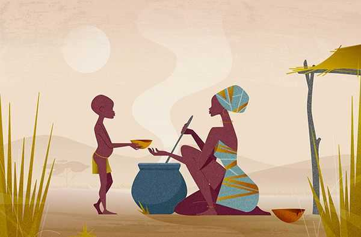

Travor Noah
If I were given a chance to rename this book I would give it a title of raised by her bravey, trevor's character and values were shaped by his mother's strength. In the book we see a mom who won over fear to give her son a future she never got to have but believed that her son deserved it and should get it anyway no matter the apartheid-era south Africa was facing at that time where being black was a curse but to her son it was a chance to thrive and grow.

Explaining the quote Abel wanted a traditional marriage with a traditional wife...but he never fell in love with subservient women...'He only wants a woman who is free because his dream is to put her in a cage.'" To me this means seeing the light in someone, but wanting to dim it. Some men are attracted to strong, independent women not because they value that freedom, but because winning over it feeds their ego. The cage isn't always physical it's emotional,psychological,even spiritual. It might look like restricting her ambitions, silencing her opinions or slowly pushing her down and lowering her level of confidence.
I've seen people fall for women who are confident,driven, and outspoken only for the men to later criticize those same traits they once died for when they feel threatened or insecure. It's as if freedom was attractive until it demanded respect, not control. Today, we talk more about equality, but many people regardless of gender still stuggle with unlearning deeply rooted Ideas of dominance and submission between a man and a woman. In some traditions still means obidience.But love shouldn't be about molding someone Into a version that makes you feel safe or powerful.This quote reminds me that we need to examine not just who we're attracted to, but why and what we intend to do with the love we had given.
I don't regret anything I've ever done in life, any choice that I've made. But I'm consumed with regret for the things I didn't do, the choices I didn't make, the things I didn't say. We spend so much time being afraid of failure, afraid of rejection. But regret is the thing we should fear most.